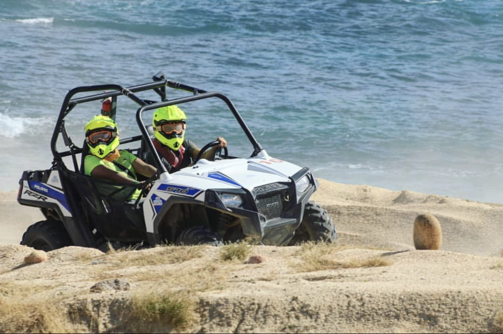

¿Por qué nosotros?
Bike-ing-PCR es la mejor y más accesible empresa de alquiler de vehículos todo terreno en todo Playa del Carmen. Estamos muy orgullosos de nuestros vehículos todo terreno y no queremos nada más que nuestros clientes regresen a Tulum una y otra vez. Sabemos que esto solo sucede cuando los visitantes se divierten aquí. Esto significa que nuestro éxito se basa en su diversión y seguridad. Queremos que se divierta mucho alquilando con nosotros.
¿Qué ofrecemos?
Con nuestros vehículos podrás disfrutar y visitar los impresionantes paisajes de la región. Abriéndote paso por los senderos de terracería sin problema alguno.
